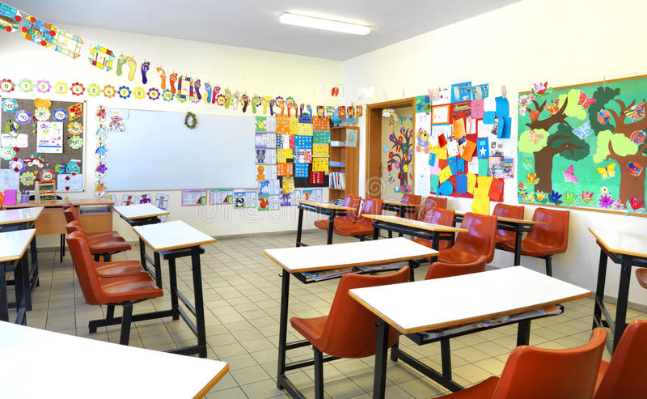
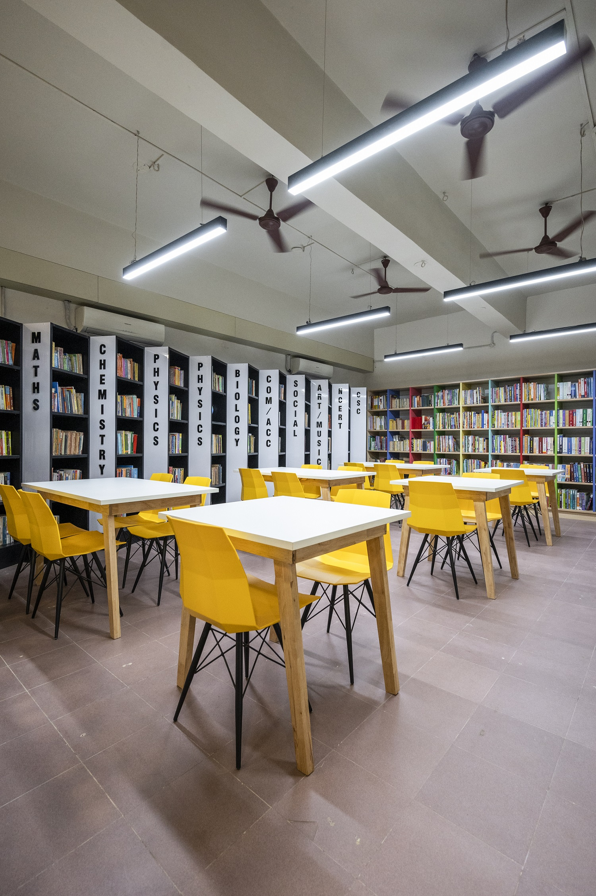
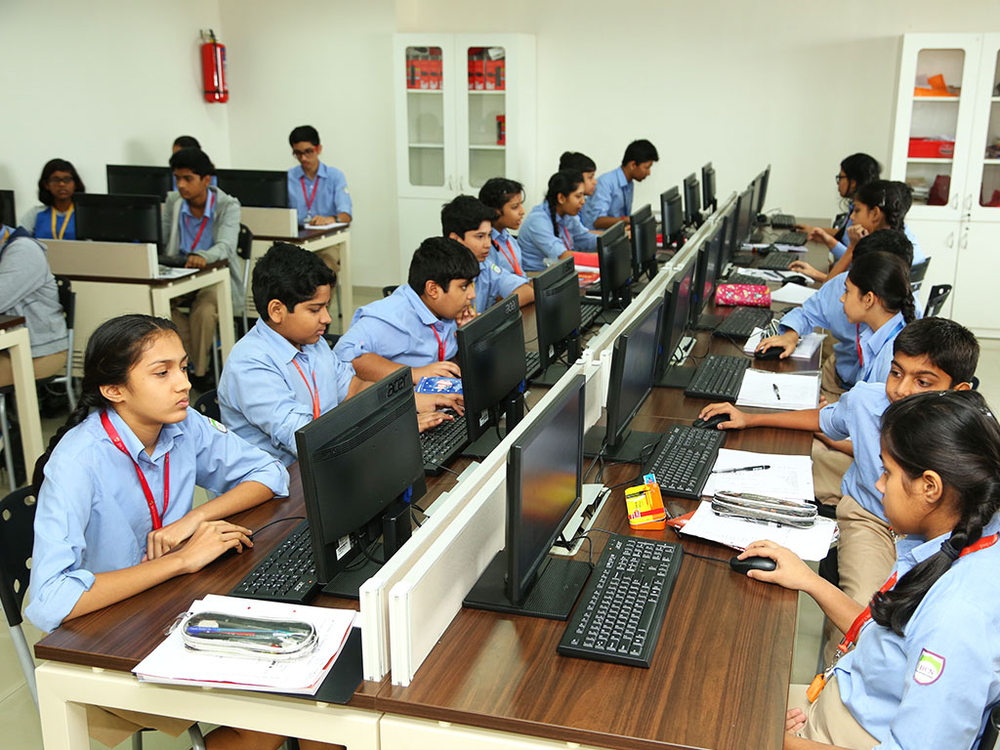
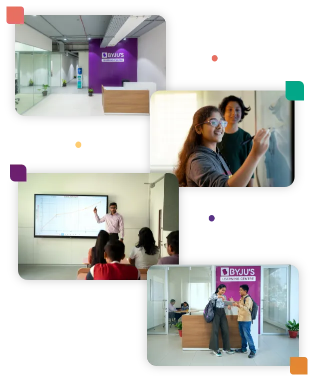

•⁃⁃⁃⁃ GALLERY ⁃⁃⁃⁃•

SMART CLASSES
The ambiance at BYJU'S inspires learning and the facilities here are truly sophisticated with world class. The classrooms are spacious enough and well equipped with teaching tools.
The ambiance at BYJU'S inspires learning and the facilities here are truly sophisticated with world class. The classrooms are spacious enough and well equipped with teaching tools.

LIBRARY
The Central Library at BYJU'S is a gateway to knowledge resources. It houses a wide collection of Books, Encyclopedias, Journals, Magazines and other research related papers.
The Central Library at BYJU'S is a gateway to knowledge resources. It houses a wide collection of Books, Encyclopedias, Journals, Magazines and other research related papers.

LABORATORIES
BYJU'S School is well equipped with state-of-the-art laboratories for Physics, Chemistry, Biology and Computer with modern equipment, models and unique facilities.
BYJU'S School is well equipped with state-of-the-art laboratories for Physics, Chemistry, Biology and Computer with modern equipment, models and unique facilities.

ECAYLP CLASSROOMS
Education is a process wherein the focus is on imparting knowledge to the students. It can only be completed when there is an overall physical and mental development.
Education is a process wherein the focus is on imparting knowledge to the students. It can only be completed when there is an overall physical and mental development.